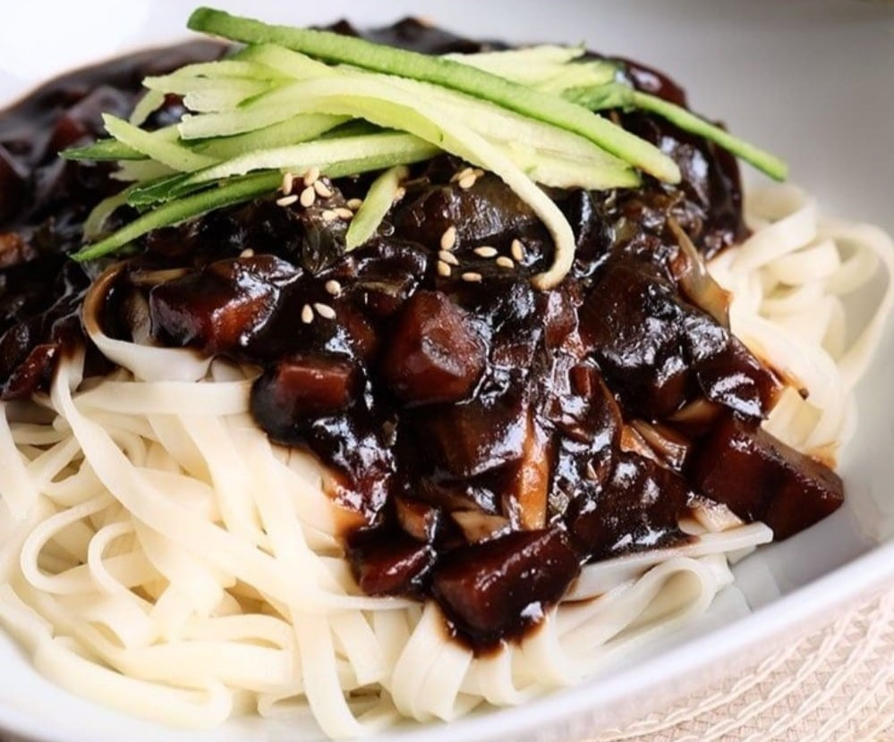

Jajangmyeon
Home
Jajang (자장; alternatively spelled jjajang 짜장) is derived from the Chinese word zhájiàng (炸酱), which means "fried sauce". Myeon (면) means "noodles". The Chinese characters are pronounced jak (작; 炸) and jang (장; 醬) in Korean, but the noodle dish is called jajangmyeon, not jakjangmyeon, because its origin is not the Sino-Korean word, but a transliteration of the Chinese pronunciation. As the Chinese pronunciation of zhá sounded like jja (rather than ja) to Korean ears, the dish is known in South Korea as jjajangmyeon, and the vast majority of Korean Chinese restaurants use this spelling.

Ingredients
300gm pork
3 potatoes
2 large onions
3 handful of cabbage
300gm chungjang
oil
1 green onion
500ml water
2-3 tablespoons of slurry
3-4 tablespoons of sugar
Noodles
Cucumber for topping
Nutrition Facts
Calories 610
Total Fat 23.0g
Cholesterol 30mg
Sodium 1060mg
Total Carbohydrate 91.0g
Vitamin C 2%
Calcium 4%
Procedure
Dice all the veggie ingredients.
Fry the chungjang with oil on low heat until glossy for 10minutes and keep the excess oil and glossy fried chungjang in seperate bowls.
Take another pan and coat it with oil, fry the diced green onion.
When fragrant, add pork, diced veggies, starting from the hardest to softest, chungjang and sugar and keep frying.
Add and boil water, add slurry to thicken the sauce.
Boil the noodles and rinse in cold water to avoid overcooking of noodles.
Serve the noodles with jajang sauce and garnish with cucumber.
Expert Guide
Back ←
Scroll to Top ↑